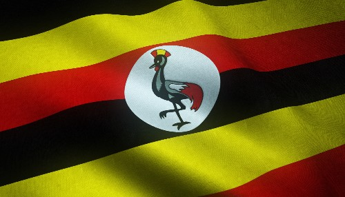

My name is Muntu Titus and I am a software developer. I specialize in developing robust and efficient software solutions. My passion for coding and technology drives me to continuously learn and apply the latest programming techniques and frameworks. I enjoy working on collaborative projects and am always eager to take on new challenges that push the boundaries of what software can achieve.
Kampala, Uganda
 Uganda is a landlocked country in East Africa, bordered by Kenya, South Sudan, DR Congo, Rwanda, and Tanzania. Its diverse landscapes include the Rwenzori Mountains and Lake Victoria. The capital is Kampala, and its population is about 47 million (2023). English and Swahili are official languages, and the currency is the Ugandan Shilling (UGX).